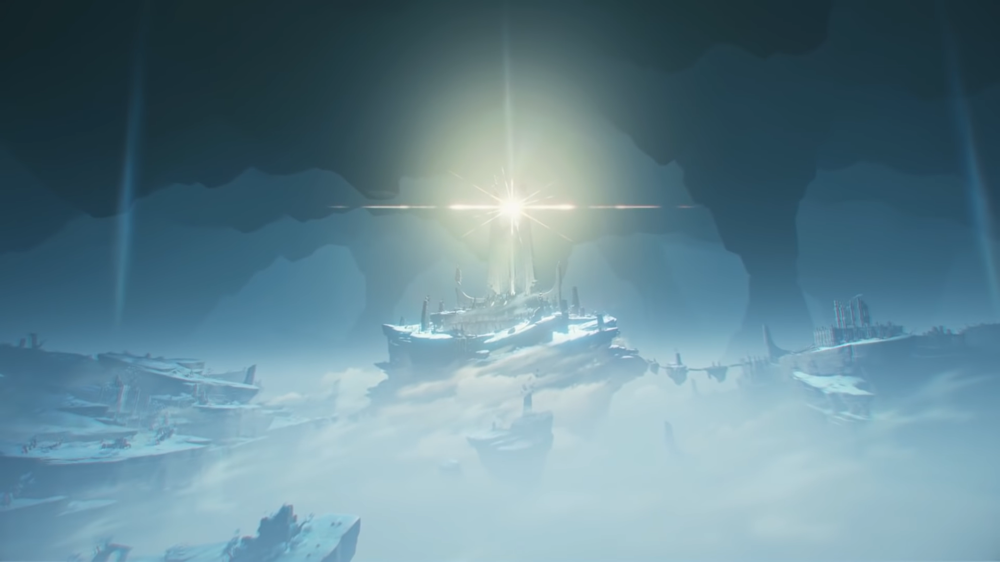

Genshin Impact
Genre: Action RPG, Fantasy, Adventure
My thoughts
Genshin Impact is undoubtedly one of the most popular games you can play today, that is available on almost any gaming platform. Currently, it boasts around 50 million average monthly players. It also has a good reception with many awards coming from the likes of Apple's "iPhone's Game of the Year 2020", Google Play's "Users' Choice Game 2020", TapTap game award "Game of the Year", "The Game Awards 2021" and a couple others. This was an exceptional hit on the year 2020, but does it still hold true? Spoilers though, yes it still is.
As I first played it, I really noticed how wonderfully and carefully crafted the soundtracks are in this game, together with the gorgeous sceneries you could view while exploring different landscapes that matches the music. Combining those two elements together brings an immersive experience, and let me just say that mihoYo does it very well. Enkanomiya, the newest playable area, is a silent and desolate underground cave. It's empty yet one of the most visually pleasing areas you could hope to explore. This is accompanied by the melacholic music which provides a cold and relaxing feeling. It just captivates me to know more of its history and explore the scene. 
The story in Genshin starts off very slow, but the more you play it, the more you sense an overarching plot building up. As you progress, the world you know keeps expanding, but is limited by the version's current content you are playing on. This is because a lot of G.I. players who are caught up in the storyline knows about having no content to play with except for the time-limited events. As of right now, the developers have yet to give us a concrete roadmap of what's to come in the future for this game.
The game offers you a lot of features right of the bat, without you needing to pay anything for it. The story, the gameplay, the challenge, the soundtracks, it's all there. Everything is for the most part free, and you wouldn't "need" to spend a single dime on this game to thoroughly enjoy it. Although, there are other means, I mean this isn't one of the most highest grossing games out there from nothing. What I'm talking about is the 'gacha' element, wherein you'd be the type of person to embrace its fact, or that it pushes you away from this game. What it essentially means is that, some game elements like "wishing" to get certain characters or weapons that will require some luck to get. The higher the rarity the lower chance you can get the character. You could possibly accept the fact by not expecting to get everything the game has to offer, and by then you'll be enjoying the game way more.
To wrap things up, there are definitely more to love about this game than what I have just said in this review like the design of the playable characters and their story, or the fun events it has. For a supposed 'mobile game', it sets a higher standard for these games, and I think that's a good thing. Genshin Impact is a game you should be aware of, and it will continue like that for years to come. I really recommend this game for anyone looking to just play anything in general.